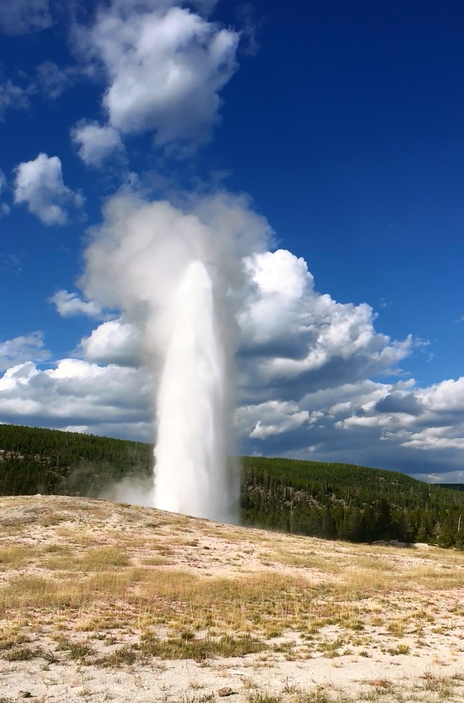
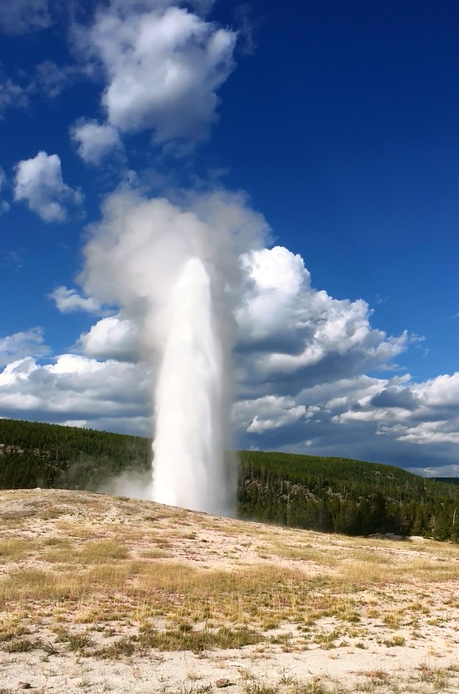

Marilyn Pianko
My name is Marilyn and I am a double major in Environmental Studies and Geography, also a minor in GIS. Some of the classes I have taken, relating to GIS are: interactive cartography, remote sensing, GIS across disciplines, GIS 1,2,and 3. I honestly enjoy making maps and I hope you enjoy the ones I made below!
Education
Northeastern Illinois University
I have maintained a GPA of 3.56 over the course of my undergraduate program.
Hard Skills
HOBO water level and quality recoring and analysis
Soil Classification and description
Indoor air quality measurement and analysis
ArcGIS spatial analysis and cartography
Experience writing conservation and resource plan
Working knowlege on Microsoft, Excel, and Powerpoint
Soft Skills
Commited to teamwork
Interpersonal communication
Effective time managment
Ability to work under pressure
Excellent written and verbal communication
Speak and write in fluent Polish
Research Projects
Out of the 46 National Parks found within the contiguous United States, the top 12 largest protected preserves are displayed in this map. These parks have a very rich history and all have extremely diverse ecosystems. Millions of people travel from all over the world to visit these pristine scenic areas. It is important to establish strict rules and regulations in order to protect the landscape itself, as well as all the species that inhabit these areas maintaining a healthy ecological community. If you hover over the pink boundaries, they indicate the top 12 greatest National Parks in the contiguous United States according to their acreage. You will discover fascinating information about the geology, physical geography, history, and numerous interesting facts about these beautiful places. The green boundaries in the map represent the other 34 National Parks with information about their boundaries in acres. You can visualize where they are located using a satellite imagery option, or if you need help locating these parks by state, then you can use the satellite image with states to help identify the location. With climate change being a huge factor, these boundaries are getting smaller and smaller. Now is the time to get out and see what these places have to offer. Go out and appreciate the beauty and wonders of these parks.

A map of Australia showing population based on postal codes provided by data from australiantownslist.com in 2019.

Kruger National Park sites for remote lodges showing suitable locations in green and unsuitable locations in red.
A quantitative analysis of land cover before the Yosemite Rim Fire using Unsupervised Classification.

Transportation Reclassification map showed clusters in the south side of Chicago where there is no transportation within .3 miles, suggesting that area could be suitable for a location of a farmers market. Based on the current farmers markets mapped in the reclassification map, south side of Chicago shows a lack of markets in those areas within the 2 mile range. Suggesting a possible location to be implemented. The areas in “red and light red” are suitable locations for a potential new site, based on accessibility through transport, distance from other markets and the population density in Chicago.
Python script for changing all the shapefiles in a folder to a new projection then the new projected files clipped to a specific feature layer.
Interests
My interest include hiking, kayaking, sight seeing, traveling and pretty much being out in nature. I also enjoy making functional pieces out of ceramic. Lastly, I am a huge animal lover and I love spending time with my dogs.

 
